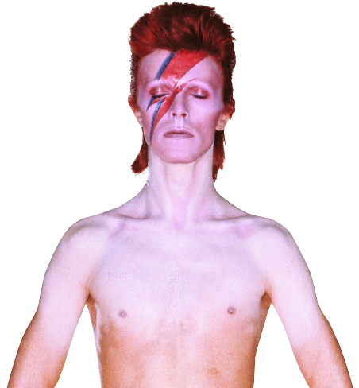

David Robert Jones (Londres, 8 de enero de 1947-Nueva York, 10 de enero de 2016),más conocido por su nombre artístico David Bowie,fue un cantautor, actor, multiinstrumentista, productor y diseñador británico. Figura importante de la música popular durante casi cinco décadas, Bowie es considerado un innovador, en particular por sus trabajos de la década de 1970 y por su peculiar voz, además de la profundidad intelectual de su obra.